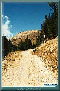
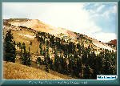
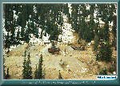
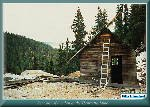
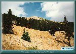
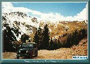
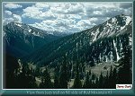
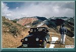
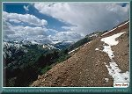
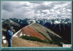

Top of Red Mountain Number 3
Contributed by Jerry Clark
| The Prospect Gulch Side Trip off County Route 10 offers a view of two large mining operations; the Henrietta and the Lark Mine. Experienced 4 wheel drivers can also use this route to reach the top of Red Mountain Number 3. The road up Prospect Gulch is a graded road, steep in areas, and is recommended for 4 wheel drive vehicles only. |
| The route, designated San Juan County Road #35, takes off to the left from the Cement Creek Road, County Road #10, approximately 6.5 miles from Silverton at the bottom of Dry Gulch turning back south to Prospect Gulch. |
| As you drive up the road, you will have a view of McMillan Peak and a microwave tower on the left. After circling the face of the mountain and entering Prospect Gulch you can look down off the road to the left and see an old power line and the tram bases of the Henrietta Tramway. The tramway was built in the early 1900's and ran 5300 feet from the Henrietta Mine to a loading dock at the base of Prospect Gulch where the ore was loaded into Silverton Gladstone & Northerly Railroad cars and transported to the Kendrick-Gelder Smelter at Silverton to be treated. |
| Red Mountain No.3 can be seen ahead and to the right at this point. |
| An old road, which is washed out just beyond the bend, takes off to the left leading down to creek level and the lower tunnel of the Henrietta Mine. The upper level of the Henrietta is visible from this point. An old cabin sits on the right just off the road. |
| Continuing up the trail, the Lark Mine is on the right. The Lark was located around 1905, and is at an altitude of 11,500 feet. Three tunnels were driven over the years at the Lark. The lowest tunnel is located at road level just beyond the shed, The other two tunnels are higher up the mountain. |
| Continuing up the main route, the road to the left takes you to the Crown Prince operation. As you cross the creek, you will see 2 of the wooden culverts built in the early 1900's. This road dead ends. Return to the main route up the gulch. |
| Further up the main route the road to the right is the Joe and John Mine. This mine was purchased by the Lark Mine in the 1920's and worked as part of the Lark holdings. |
| Continuing up the gulch at a junction, the road to the left takes you to the upper tunnel of the Henrietta Mine. This road is steep. On a knoll just before reaching the level of the upper tunnel are the timbers of a boarding house possibly owned by the Mammoth Tunnel Mining Company. The Henrietta Tunnel can be seen just beyond the knoll. The mountain across the canyon with the microwave tower is Storm Peak. From this vantage point you also have a view of Minnehaha Basin. Return to the main route up the gulch from the Henrietta Mine. |
| At the intersection with the main route, turn left. Inexperienced 4 wheel drivers should continue pass the road on the right. This is the trail up Red Mountain No.3. Following the main route will take you to the remains of the Galena Queen Mine. At the Galena, some mining machinery can be seen within the second building. The Prospect Gulch Side trip ends at the Galena Queen Mine. Return following the main route down. |
| For experienced 4 wheel drivers, the road up Red Mountain No.3 offers some spectacular views. |
| The road is very steep with sharp switchbacks, crossing talus rock in a number of areas. There are few places to turn around or pass oncoming vehicles until the top. Unlike some of the other trails in the San Juans, this road is infrequently traveled. During the third week of September 1996 the road was blocked by snow at approximately 12,500 feet. Fortunately the snow was encountered only a few hundred yards above one of the switchbacks. The view from this level is shown in the accompanying photos. |
| The switchback allowed sufficient space for turning a Wrangler around for a more comfortable trip down! Take time to enjoy the views going up and down. Remember to be courteous to others who might be on the trail. Pick a safe spot to stop and pull over to allow others to pass safely. |
|
 |
The Prospect Gulch Trail
(134k) |

|
 |
The trail to the top of
Red Mountain #3 (115k) |

|
 |
The remains of the Henrietta Mine
and Mammoth Tunnel (150k) |

|
 |
The remains of a cabin at
the Henrietta Mine (118k) |

|
 |
The remains of the Joe and John Mine
(125k) |

|
 |
Climbing the back of
Red Mountain #3 (122k) |

|
 |
View from jeep trail on SE side of Red Mountain #3 looking down Prospect Gulch. Lark Mine remains in lower right.12,000 ft.
(137k) |

|
 |
View from Red Mountain #3 at 12,500 Feet
(137k) |

|
 |
End of trail due to snow on Red Mountain #3 on 9/20/96 at about 200 feet short of summit at about 12,500 feet
(143k) |

|
 |
Red Mountian #2 viewed from Red Mountian #3 at 12,500 feet
(136k) |


|
The Narrow Gauge Circle is written, maintained,and hosted by: Mark L. Evans Send Comments to:Mark L. Evans All original materials, text, and digital images Copyright © 1996-2017 Mark L. Evans. All rights reserved. Imitation is said to be the "sincerest" form of flattery.....Please don't flatter us without permission. |